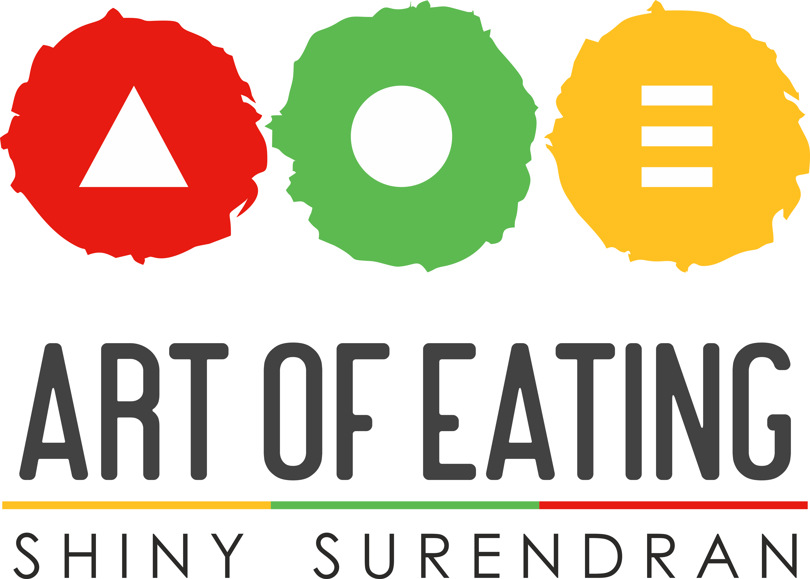

Everyday health, made workable.
Wellness and weight goals, women’s and hormonal health, insulin resistance, prediabetes and PCOS.

Book a consultationMetabolic health · Sports & fitness nutrition
Shiny Surendran brings 26+ years of experience to practical, personalised plans built around home food, local choices and the realities of everyday life.
26+ yearsNutrition practice
Food firstPractical and local
IntegratedCollaborative care

Two equal practice pillars
Wellness and weight goals, women’s and hormonal health, insulin resistance, prediabetes and PCOS.
Training nutrition, recovery, injury-prevention support and muscle building across sporting contexts.
How it works
Discuss goals, health, training, routine and food preferences.
Shape a realistic route around food, hydration and relevant measures.
Use practical home and local food through work, travel and training.
Adapt through follow-ups and, where relevant, multidisciplinary care.